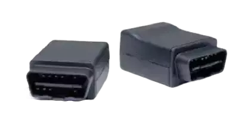
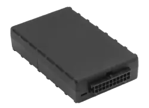

Plug-in GPS Tracker
Installs in seconds, reports everything you need to know.
Installs in seconds, reports everything you need to know.
What are your employees doing—or not doing? Are they where they’re supposed to be? Are they wasting their time and your money? The One Step Plug-in GPS Tracker boasts a small design with world-class benefits.
Get the actionable metrics you need to reduce emissions, cut down on unnecessary idle-time, improve driver safety and transform your fleet operations.
Reduction in man-hours
Reduction in fuel costs
Reduction in number of accidents
reduction in insurance premiums
Reduction in citations
Our up-to-the-minute reports are the foundation that allows you to reduce fleet accidents, off-limits use, poor driving habits, protect company property and transform your fleet operations.
The One Step Plug-in GPS unit is the simplest tracking solution available.
Just find the On-board diagnostics (OBD-II) port and plug the unit in. It fits in all passenger & light commercial vehicles built after 1996 and makes tracking your fleet as easy as charging a cell phone.
The plug-in device can also be hidden several ways for a more discreet installation.
One Step GPS’ platform is powerful and built for you. Learn the
software rapidly on your own or with the help of our industry-leading
support. For simple applications, our software can be learned in as
little as 1 hour. In most cases, brand-new users can familiarize
themselves with the software in less than a day.
Our platform places all of the information you need to transform fleet
operations, safety and success at your fingertips:
What's the difference between Plug-in trackers and hardwired trackers?
Plug-in GPS fleet trackers are devices that are very easy to install and remove, while hardwired GPS fleet trackers are more permanently integrated into the vehicle's electrical system. Anyone can install a plug-in GPS tracker, it’s like charging a cellphone. Low Voltage experience or a professional mechanic is required to install hardwired GPS trackers, and they are difficult to remove.
To install your Plug-in tracker, simply locate the OBD-II port in your vehicle and plug it in with the device in the proper orientation:
Does My Vehicle Have an OBD-II Port?
On-board diagnostics (OBD-II) ports are standard in all passenger & light commercial vehicles built after 1996. Additionally, most medium duty trucks have them as well.
While heavy-duty trucks and semis tend not to have OBD-II ports, we have adapters for all vehicle types (J1939 Type I & II, J1708, OBDII HD, RP1226, etc) so no matter your needs we can build a solution that works for your fleet.
To locate the OBD-II port in your vehicle look in one of these common places:
Can I hide the Plug-in tracker?
To hide the plug-in tracker you will need a screwdriver and an
extender cable.
The plug-in tracker can be hidden using these steps:
What happens if someone removes or unplugs it?
To put it simply, you will know as soon as someone removes the device.
We offer many different ways to send alerts:
You can also send the information to as many people/users as needed to ensure your trackers will always be online.
How long does it take to install a plug-in gps tracker?
It takes less than 1 minute to install once you’ve located the OBD-II ports on your vehicle.
If you are hiding the unit using an extender cable the whole process can take 10 minutes to complete once you’ve done it a couple of times.
Is it compatible with all vehicles?
The plug-in GPS tracker is compatible with any vehicle that has an OBD-II port.
All passenger and light-duty vehicles made after 1997 have OBD-II ports. Many medium-duty vehicles have them as well.
For any vehicle that doesn’t have a built in OBD-II port such as heavy-duty and semi trucks, we have adapters to fit with any vehicle (J1939 Type I & II, J1708, OBDII HD, RP1226, etc).
What types of data can the Plug-in GPS tracker provide?
The plug-in GPS tracker delivers superior GPS accuracy and dozens of powerful reports to transform ever aspect of your operations:
How accurate is the data?
Our plug-in GPS tracker delivers superior GPS accuracy, ~2.5m CEP Open Sky.
In simple terms this means that, in good weather conditions, your GPS will report vehicles within several feet of their actual physical location. Our GPS fleet trackers deliver superior accuracy so you can make confident decisions based on the data you’re receiving.
With GPS tracking updates as often as every 60 seconds, you can now have a complete, real-time view of every vehicle on the road.
What engine data is reported?
Our plug-in GPS tracker captures valuable data that can help manage fleet fuel costs, support fleet maintenance programs and keep your drivers safe:
*Not all of the above are available on all vehicles
Plug-in GPS fleet trackers are devices that are very easy to install and remove, while hardwired GPS fleet trackers are more permanently integrated into the vehicle's electrical system. Anyone can install a plug-in GPS tracker, it’s like charging a cellphone. Low Voltage experience or a professional mechanic is required to install hardwired GPS trackers, and they are difficult to remove.
To install your Plug-in tracker, simply locate the OBD-II port in your vehicle and plug it in with the device in the proper orientation:
On-board diagnostics (OBD-II) ports are standard in all passenger & light commercial vehicles built after 1996. Additionally, most medium duty trucks have them as well.
While heavy-duty trucks and semis tend not to have OBD-II ports, we have adapters for all vehicle types (J1939 Type I & II, J1708, OBDII HD, RP1226, etc) so no matter your needs we can build a solution that works for your fleet.
To locate the OBD-II port in your vehicle look in one of these common places:
To hide the plug-in tracker you will need a screwdriver and
an extender cable.
The plug-in tracker can be hidden using these steps:
To put it simply, you will know as soon as someone removes the device.
We offer many different ways to send alerts:
You can also send the information to as many people/users as needed to ensure your trackers will always be online.
It takes less than 1 minute to install once you’ve located the OBD-II ports on your vehicle.
If you are hiding the unit using an extender cable the whole process can take 10 minutes to complete once you’ve done it a couple of times.
The plug-in GPS tracker is compatible with any vehicle that has an OBD-II port.
All passenger and light-duty vehicles made after 1997 have OBD-II ports. Many medium-duty vehicles have them as well.
For any vehicle that doesn’t have a built in OBD-II port such as heavy-duty and semi trucks, we have adapters to fit with any vehicle (J1939 Type I & II, J1708, OBDII HD, RP1226, etc).
The plug-in GPS tracker delivers superior GPS accuracy and dozens of powerful reports to transform ever aspect of your operations:
Our plug-in GPS tracker delivers superior GPS accuracy, ~2.5m CEP Open Sky.
In simple terms this means that, in good weather conditions, your GPS will report vehicles within several feet of their actual physical location. Our GPS fleet trackers deliver superior accuracy so you can make confident decisions based on the data you’re receiving.
With GPS tracking updates as often as every 60 seconds, you can now have a complete, real-time view of every vehicle on the road.
Our plug-in GPS tracker captures valuable data that can help manage fleet fuel costs, support fleet maintenance programs and keep your drivers safe:
*Not all of the above are available on all vehicles
Not sure if you need a plug-in solution or a hardwired solution?
While both options offer superior tracking and reporting capabilities,
this chart highlights the key differences so you can make the best
choice for your fleet’s needs.
|

Plug-in unit
|

Hardwired unit
|
|
|---|---|---|
| Dimensions | 1.88” x 2.50” x 1.14” | 3.7” x 2.0” x 0.8” |
| GPS accuracy | Superior accuracy, ~2.5m CEP Open Sky | Superior accuracy, ~2.5m CEP Open Sky |
| Alerts | Dozens of state-of-the-art alerts | Dozens of state-of-the-art alerts |
| Installation | Easy, less than 1 minute, can be done by anyone | Requires professional installation or low voltage experience |
| Tamper-proof | Easy to remove, extra cables required to hide device, automatic tamper alerts | Very difficult to remove, hardwired into vehicle electrical |
| Cell technology | LTE CAT-M1, GSM/GPRS, default 2-30 second update speed while on, 30 min while off | LTE CAT-M1, GSM/GPRS, default 2-30 second update speed while on, 30 min while off |
| Warranty | Lifetime warranty (Read our warranty) | Lifetime warranty (Read our warranty) |
| Battery draw | Typical 60 mA @ 12V (active tracking with GPS and cell enabled) | Typical 50mA @ 12V (GPS tracking and cell idle) |
| Operating temp. | -30° to +60° C (connected to primary power) | -30° to +60° C (connected to primary power) |
| Voltage range | 9-30 VDC (start-up, operating) | 9-30 VDC (start-up, operating) |
| Power supply | 24/7 direct from vehicle | 24/7 direct from vehicle |
| Battery backup | 2 hour backup battery life | 12 hour backup battery life |
| Accelerometer | Triple-axis, impact, motion sense | Triple-axis, impact, motion sense |
| Gyroscope | Triple-axis | Triple-axis |

 Request a free demo
Request a free demo
 Chat with us
Chat with us